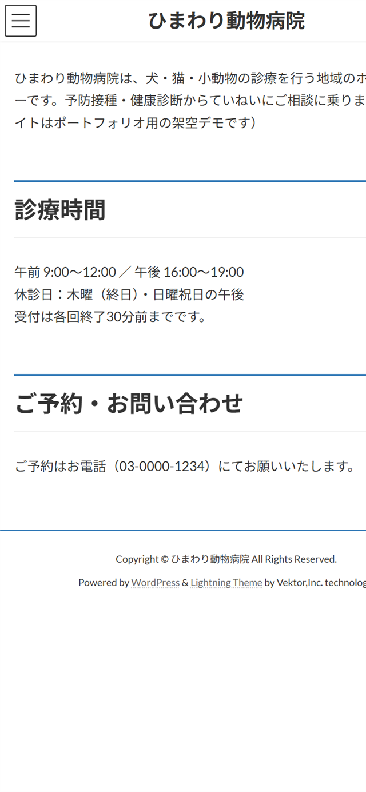
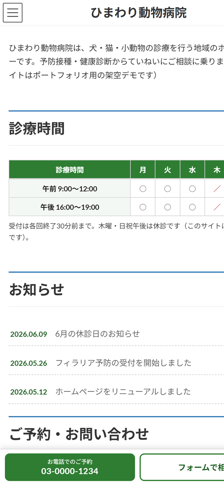
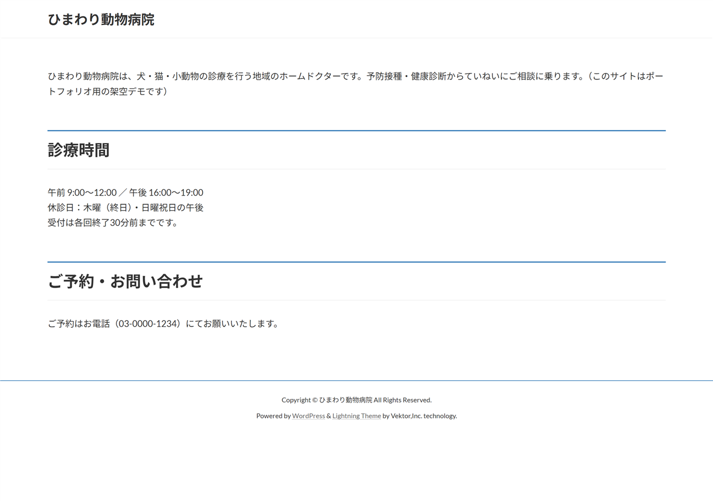
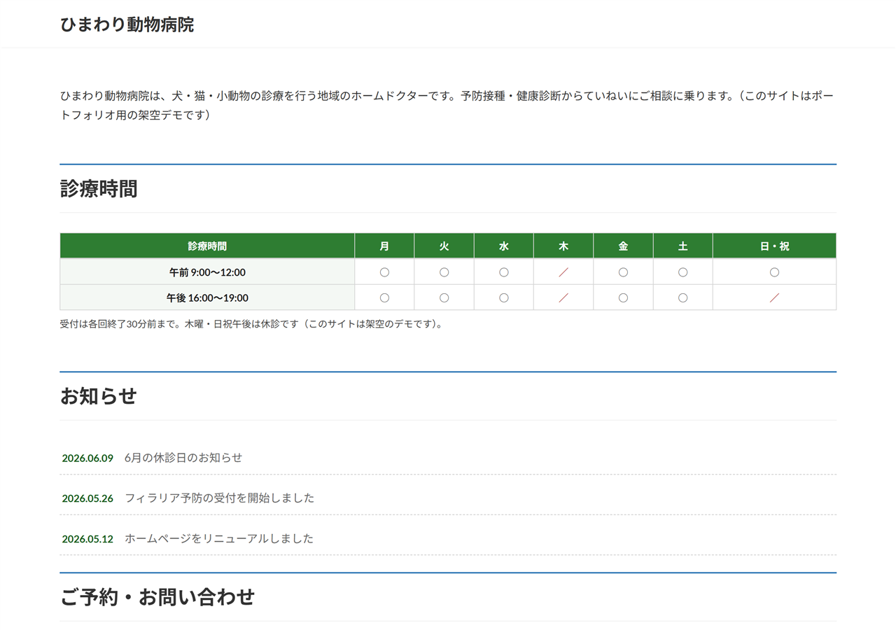
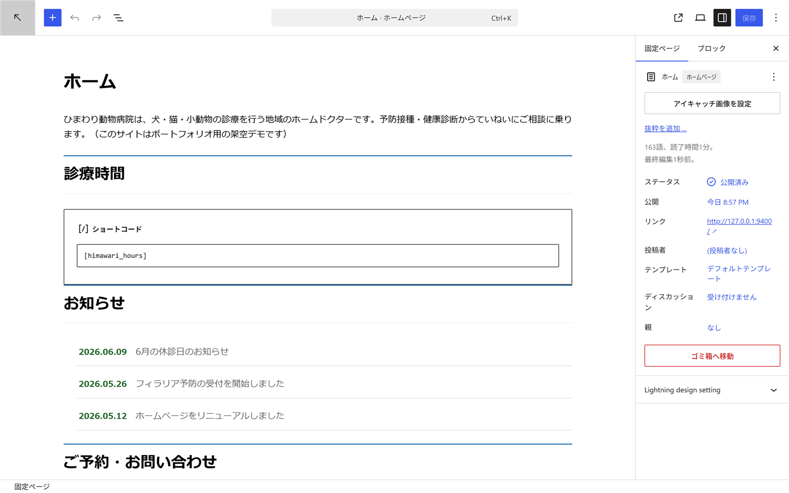

コード層の改修・機能追加
- 子テーマ作成・既存テーマの軽微修正（CSS調整・レイアウト崩れ・スマホ対応・tel: 化）
- functions.php のカスタム機能（フック・カスタム投稿・ショートコード）
- カスタムブロック（Gutenberg 対応）
- コード層の速度改善（不要な CSS/JS の削減・条件付き読み込み）
- デザインデータ（Figma 等）支給 × 既製テーマでのコーディング
→ このページのデモはすべてこの範囲だけで実装しています。
WordPress — Child Theme
既存の WordPress サイト（テーマ：Lightning）を、ページビルダーに頼らず子テーマ・functions.php のフック・動的ブロックだけで改修するとどうなるか。架空の動物病院「ひまわり動物病院」を題材に、実案件で頻出する「軽微修正〜機能追加〜速度改善」を一通り実装しました。親テーマ・プラグイン本体には一切手を入れていないので、アップデートで改修が消えません。
⚠️ 病院名・住所・電話番号・お知らせの内容はすべて架空のサンプルです。実在の動物病院・人物・団体とは関係ありません。
Scope
「コードで解決できる依頼」に絞ってお受けしています。範囲を先に明示することで、ミスマッチのないご依頼につながります。
コード層の改修・機能追加
→ このページのデモはすべてこの範囲だけで実装しています。
ビルダー・デザイン主体の作業
対象外の領域は、お受けするより専門の方にご依頼いただくほうが確実なため、最初にお断りしています。
Before → After
画像は加工なし・ローカル環境で実際に動いている WordPress の撮影です。同じ環境を下の「手元で動かす」で再現できます。





What changed
すべて子テーマ側のコードで実装。どのファイルの何行目かまで GitHub で確認できます。
| 課題 | 改修（実装方法） | 効果 |
|---|---|---|
| 電話番号がタップ発信できないテキスト | tel: リンク化＋wp_footer フックでモバイル固定CTA（電話／フォームの2導線）を挿入 | スマホからワンタップ発信。どこまで読んでも問い合わせ導線が画面内に残る |
| 診療時間が文章のベタ書き | ショートコード [himawari_hours] で曜日×午前午後の表に（スマホは内部スクロールではみ出さない） | 休診日がひと目で分かる。文言修正も1箇所で済む |
| お知らせを載せる場所がない | カスタム投稿タイプ「お知らせ」＋ビルドツール不要の動的ブロック（block.json + render.php） | お客様が管理画面から自分で投稿・更新できる。トップに最新N件が自動表示 |
| フォームのCSS/JSが全ページで読み込まれる | Contact Form 7 をフォームのあるページだけで読み込む条件分岐 | フォーム以外の全ページが軽くなる |
| 使っていないスライダーのJSが毎回読み込まれる | スライダー非表示設定のとき Swiper（JS 151KB＋CSS 18KB）を wp_dequeue_script | 下の実測どおり、JSをほぼゼロに |
| 絵文字変換スクリプトが常時読み込み | 絵文字を使わないサイトのため remove_action で停止 | 不要リクエスト削減 |
| CSSがキャッシュされ更新が反映されない事故 | 子テーマCSSのバージョンに filemtime（最終更新時刻）を自動付与 | 「更新したのに変わらない」問い合わせを構造的に防ぐ |
Measurable
トップページが読み込む CSS / JavaScript をローカル環境で実測した値です（フォント・画像を除く）。見た目を変えずに、読み込むものだけを減らしています。
| 観点 | Before | After | 削減 |
|---|---|---|---|
| JavaScript | 6ファイル・193.6KB | 1ファイル・6.8KB | −96% |
| CSS | 9ファイル・235.9KB | 7ファイル・217.4KB | −8% |
| CSS＋JS 合計 | 15リクエスト・429.5KB | 8リクエスト・224.2KB | −48% |
Run it yourself
スクリーンショットだけでなく、実際に動く WordPress ごと公開しています。Node.js が入っていれば、PHP や MySQL のインストールなしで起動できます（WordPress Playground 利用）。
# コードを取得
git clone https://github.com/hayaboosan/lightning-child-demo.git
cd lightning-child-demo
# 改修後（子テーマ適用済み）を起動 → http://127.0.0.1:9400/
npx @wp-playground/cli@latest server --blueprint=blueprint.json --mount=./lightning-child:/wordpress/wp-content/themes/lightning-child --port=9400改修前と見比べる場合は --blueprint=blueprint-before.json（マウントなし）で起動してください。テーマ・プラグイン・デモ記事の投入まで blueprint が自動で行います。
レイアウト崩れ・スマホ対応・表示が重い・お知らせ機能が欲しい——上の「対応できます」の範囲なら、現状確認のうえ無料でお見積もりします。